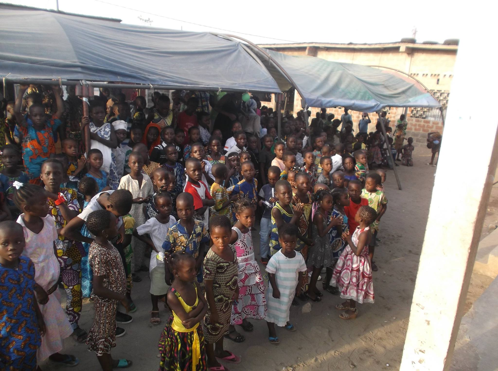
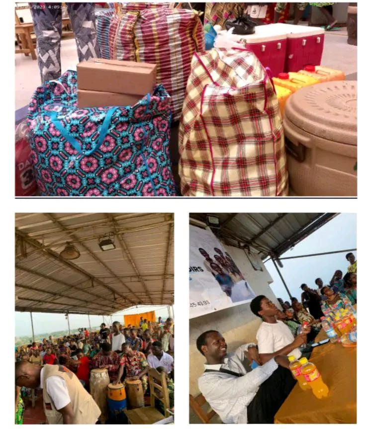

Découvrez les dernières nouvelles, articles et mises à jour de l'ONG GEROD, mettant en lumière nos actions, projets et initiatives visant à promouvoir les droits de l'enfant et le développement communautaire.

Dans le cadre de ses actions en faveur de la protection et de l'épanouissement des enfants, l'ONG GEROD a organisé une édition de sensibilisation consacrée à la connaissance des droits et devoirs de l'enfant...

Dans le cadre de ses actions solidaires en faveur des enfants vulnérables, l'ONG GEROD a organisé une action humanitaire destinée à soutenir les orphelins à travers la remise de dons essentiels...
Au cours de ce programme, les participants ont été initiés aux notions fondamentales de l'informatique, notamment l'utilisation de l'ordinateur, la découverte des logiciels de base et les bonnes pratiques liées au numérique...
Dans le cadre de ses actions en faveur de la protection et de l'épanouissement des enfants, l'ONG GEROD a organisé une édition de sensibilisation consacrée à la connaissance des droits et devoirs de l'enfant.
Cette initiative vise à informer et à éduquer les enfants sur les principes fondamentaux qui garantissent leur bien-être, leur sécurité et leur développement au sein de la société. Au cours de cette activité, plusieurs séances d'échanges et d'explications ont été organisées afin de permettre aux enfants de mieux comprendre leurs droits, mais aussi les responsabilités qui les accompagnent.
À travers des discussions interactives, des exemples concrets et des activités éducatives, les participants ont pu découvrir l'importance du respect, de la responsabilité et de la citoyenneté dans leur vie quotidienne.
Cette édition de sensibilisation a également été l'occasion de rappeler le rôle essentiel de la communauté dans la protection et l'accompagnement des enfants. En renforçant leurs connaissances et leur confiance, l'ONG GEROD contribue à former des enfants conscients de leurs droits et engagés à devenir des citoyens responsables.
À travers ce type d'initiatives, GEROD réaffirme son engagement à promouvoir l'éducation, la protection et l'épanouissement des enfants, afin de construire une société plus juste et respectueuse des droits de chacun.
Dans le cadre de ses actions solidaires en faveur des enfants vulnérables, l'ONG GEROD a organisé une action humanitaire destinée à soutenir les orphelins à travers la remise de dons essentiels.
Cette initiative s'inscrit dans la volonté de l'organisation d'apporter un soutien concret aux enfants en situation de précarité, en leur offrant non seulement des biens matériels, mais aussi un accompagnement moral et éducatif.
Lors de cette action, des kits alimentaires, des fournitures scolaires, des vêtements et des produits d'hygiène ont été distribués aux orphelins, afin de subvenir à leurs besoins quotidiens et de leur garantir des conditions de vie dignes.
Au-delà de la remise de dons, cette journée a été marquée par des moments d'échange, de partage et de sensibilisation, permettant de créer une atmosphère de confiance et de réconfort pour ces enfants.
Cette action humanitaire a également mobilisé des bénévoles, des partenaires et des membres de la communauté, renforçant ainsi la solidarité collective et l'engagement citoyen.
Au cours de ce programme, les participants ont été initiés aux notions fondamentales de l'informatique, notamment l'utilisation de l'ordinateur, la découverte des logiciels de base et les bonnes pratiques liées au numérique.
Cette formation vise à permettre aux enfants de développer des compétences essentielles pour s'adapter aux exigences du monde moderne et renforcer leur autonomie dans l'utilisation des outils technologiques.
À l'issue de ce programme, une cérémonie officielle a été organisée pour la remise des attestations aux participants, en présence des formateurs, des parents et des responsables de l'ONG GEROD.
Cette reconnaissance officielle valorise l'engagement et les efforts fournis par les enfants tout au long de la formation, tout en les encourageant à poursuivre leur apprentissage dans le domaine du numérique.
L'ONG GEROD entend renforcer ce type d'initiatives pour offrir aux enfants des opportunités d'apprentissage et d'insertion dans un monde de plus en plus connecté.